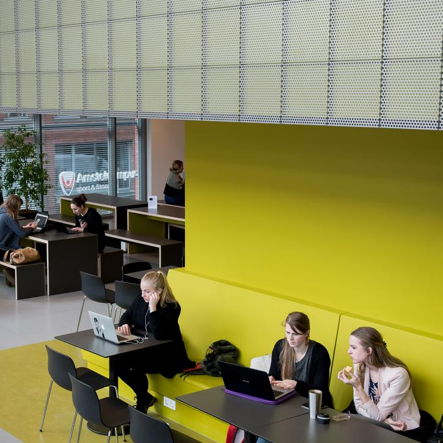
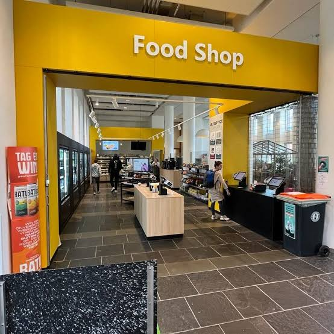
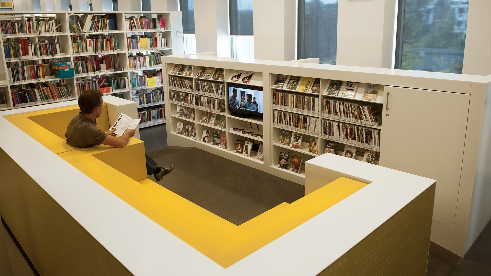

Bezinningsruimte
2de verdieping
Een rustige plek waar studenten terechtkunnen voor gebed, bezinning of een moment voor zichzelf.
 Canva
Canva
 GitHub
GitHub
 Teams
Teams
 chrome
chrome
 Safari
Safari
Swipe omhoog
Swipe omlaag
2de verdieping
Een rustige plek waar studenten terechtkunnen voor gebed, bezinning of een moment voor zichzelf.

1e en 2e verdieping
Hier kun je individueel werken of samen met je team aan opdrachten werken.

Begane grond
Een plek waar je lunch, snacks en drinken kunt halen tijdens je schooldag.

Ruimte 00B20
Een open werkplaats voor HvA-studenten waar je kunt experimenteren en dingen kunt maken met onder andere 3D-printers, lasersnijders en andere gereedschappen.

3e verdieping
Een fijne werkplek om samen met je team te zitten, te overleggen en aan projecten te werken.
4e verdieping
Een rustige plek waar je je even kunt afzonderen om geconcentreerd aan je werk te zitten.

Tussen het Kohnstammhuis en Theo Thijssenhuis
Een buitenplein waar je tussen de lessen door kunt zitten, lunchen of even van de zon kunt genieten.

1e verdieping
Een handige plek om tussen de lessen door iets te eten of drinken te halen.

Hier kun je rustig studeren, aan opdrachten werken en boeken of andere studiematerialen gebruiken.